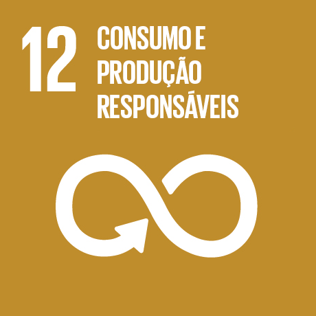
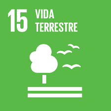

O Mês do Meio Ambiente
é o principal período de mobilização global em prol da sustentabilidade e da proteção ambiental.
O objetivo é conscientizar todas as esferas da sociedade(governos, empresas, organizações e indivíduos)
sobre os problemas ambientais e a necessidade de preservar os recursos naturais.
Desde 1972, o Dia Mundial do Meio Ambiente é comemorado em 5 de junho. No entanto,
a celebração se estende por todo o mês, com diversas iniciativas que incentivam ações concretas em defesa do planeta.
A preservação do meio ambiente refere-se ao conjunto de práticas que visam proteger a natureza e os recursos naturais, garantindo o equilíbrio dos ecossistemas. Essas ações incluem a conservação da fauna, da flora, da água, do solo e do ar, além de buscar minimizar os impactos causados pelas atividades humanas.
.jpg)
Preservar o meio ambiente é preservar todas as formas de vida, inclusive a humana.
Sem um uso sustentável dos recursos naturais,
as futuras gerações ficarão em risco.
Além disso, o descuido com o meio ambiente já traz consequências diretas para a saúde, como:
Doenças respiratórias, pulmonares e cardíacas,
Câncer,
Contaminação por produtos químicos,
Impactos psicológicos e sociais.
Os Objetivos de Desenvolvimento Sustentável (ODS) são uma agenda global criada pela
Organização das Nações Unidas (ONU)
com o propósito de construir um mundo mais justo, sustentável e equilibrado até 2030.
São 17 objetivos que abrangem diversas áreas, como erradicação da pobreza, educação de qualidade,
igualdade de gênero, saúde, desenvolvimento econômico e, principalmente, proteção do meio ambiente.
No contexto da preservação ambiental, alguns dos ODS mais diretamente relacionados são:

Visa garantir o acesso à água de qualidade e ao saneamento básico para todos, além de preservar mananciais e combater a poluição dos recursos hídricos.
Propõe a redução do desperdício, o uso consciente dos recursos naturais e a promoção de hábitos de consumo mais sustentáveis por parte de governos, empresas e indivíduos.

Incentiva ações urgentes para combater as mudanças climáticas e seus impactos, promovendo o uso de energias limpas, mobilidade sustentável e redução de emissões de gases do efeito estufa.
Foca na proteção da biodiversidade, conservação dos ecossistemas, reflorestamento e combate à degradação ambiental.
Durante a Semana da Conscientização sobre o Meio Ambiente, refletimos sobre a importância de cuidar do nosso planeta.
Pensando nisso, desenvolvemos uma maquete, um site e um jogo que trazem uma crítica construtiva, com o objetivo de aprofundar a compreensão sobre a preservação ambiental.